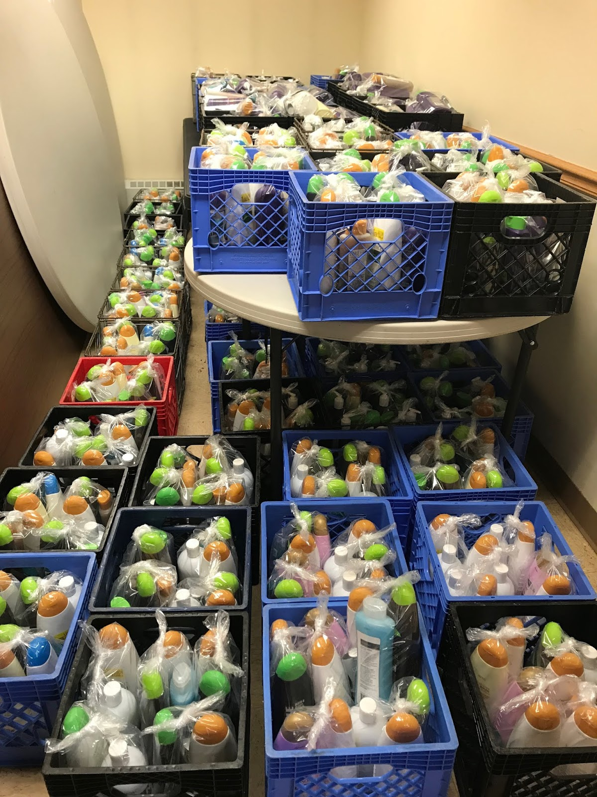
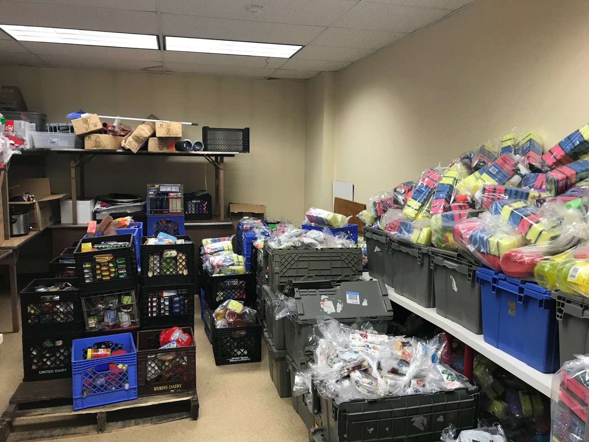
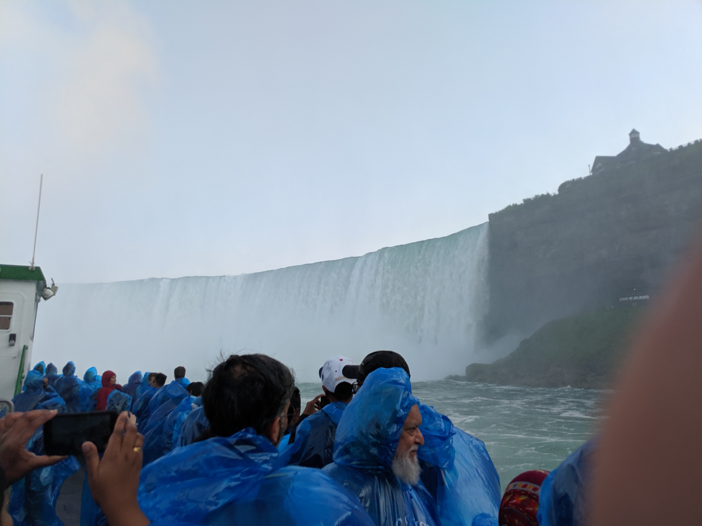
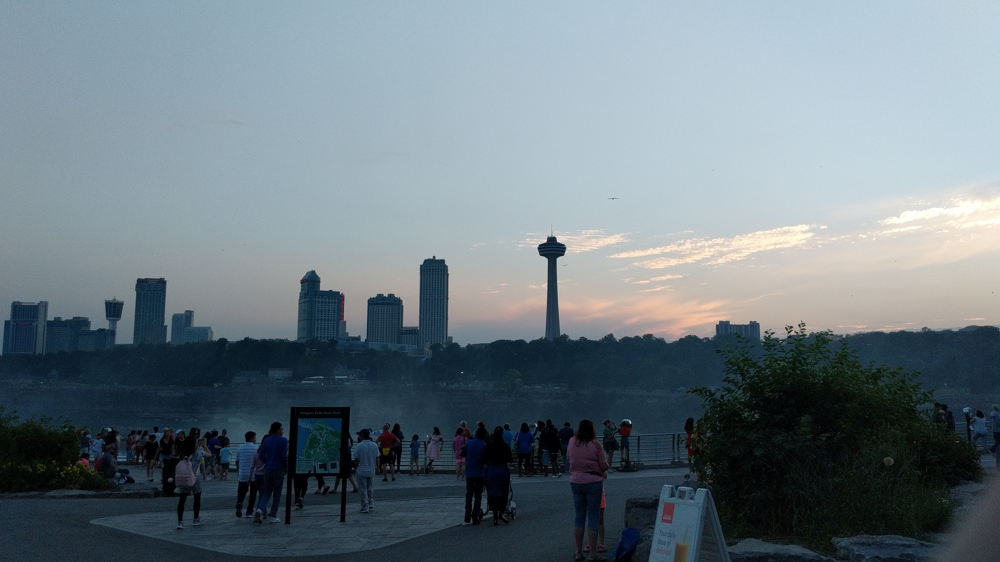
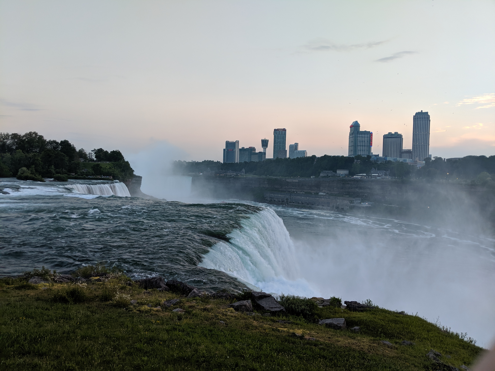
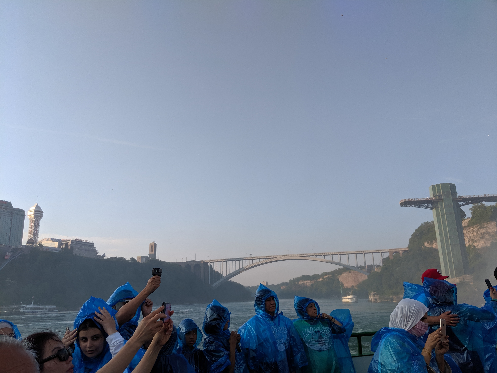
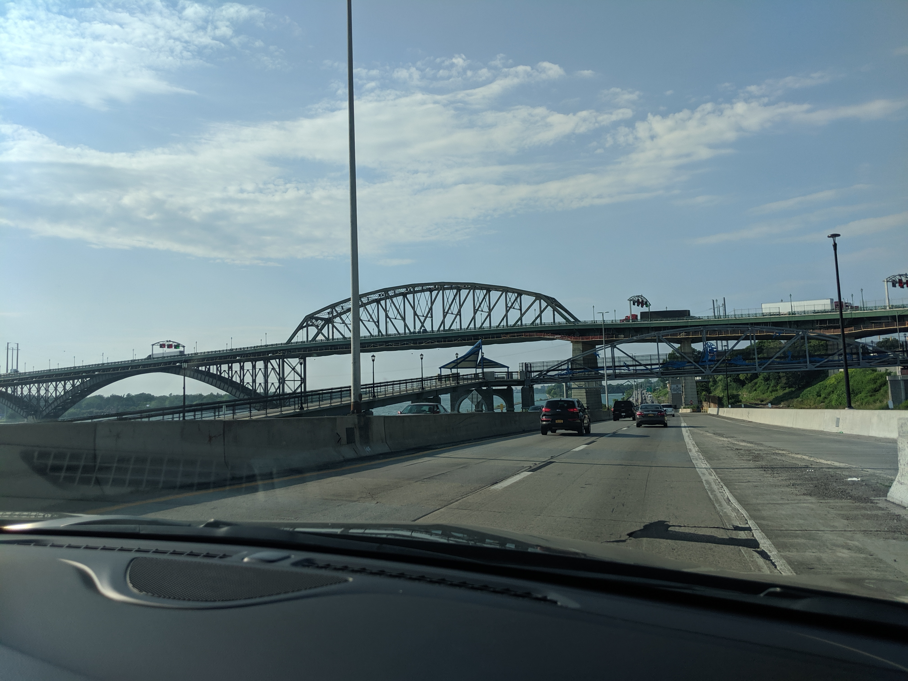
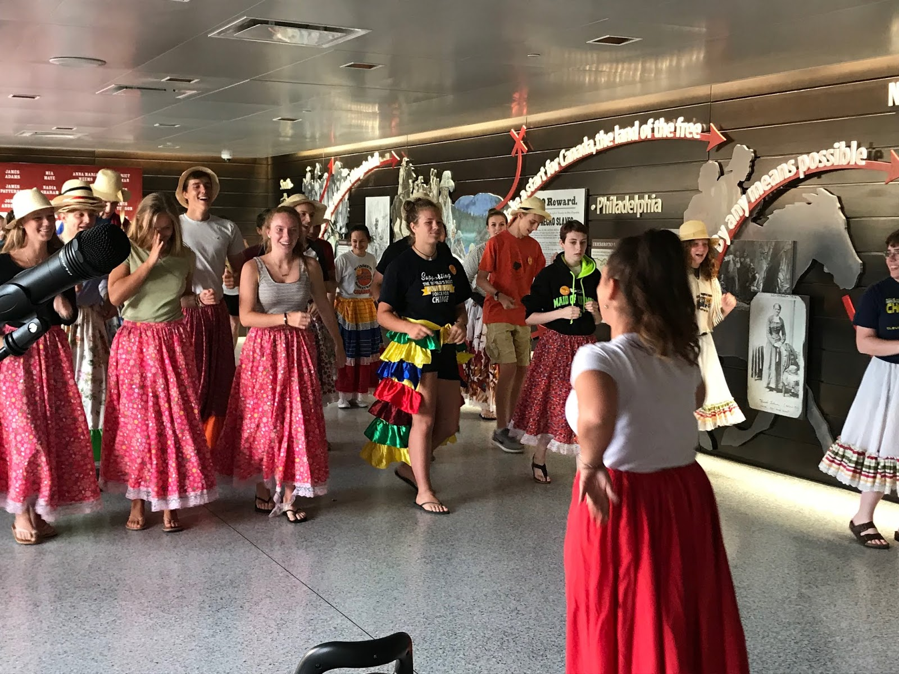

It's one of those stories again. This one does not start in July 2019, but on June 28, 2019.
I was born Catholic. I am still Catholic. Before 2020, I regularly attended mass at my local church. Every year, a handful of high school students from the church go on a week-long mission trip called Young Neighbors in Action.
It's June 28, 2019. I'm volunteering at the church's summer camp for elementary school kids, and the mission trip group explains the trip to them, and the importance of doing good deeds. I'm sitting there, listening, when I get the idea to go on the trip in 2020. Well that never happened.
Fast forward to July 5. My mom gets a text from the religious education director at my church, who is also the chaperone for the mission trip. She is looking for someone to fill the spot of my friend, who had to drop the trip due to a planned surgery. (She recovered safely.) I said I'd go.
24 hours later I'm in the church parking lot all packed up for a one week trip to Buffalo, New York. After three stops and seven hours, we arrive. It was a lot of driving on I-90 across the entirety of New York. The rest of the groups arrived the next day, coming from Ohio and Wisconsin.
Our work in Buffalo was to pack gift bags for needing citizens composed of items that they could not buy with government assistance. These largely included personal hygiene, cleaning supples, etc.
I'm working on getting pictures on my website. Here we go. I am not the photographer for some of these photos.
The items in storage waiting to be put into the gift bags.
In addition to packing these bags, we were able to get out and enjoy the Buffalo area.
On July 10, we went to Niagara Falls (the US side). I have been to the Canadian side, in 2014, and have photos from that trip. That was a fun time. We got to ride the Maid of the Mist, and get really close to the falls.
Pictures from Niagara Falls State Park. We wore ponchos since the water splashed into the boat.
The Peace Bridge connects Buffalo with Ontario. The bridge looks really cool looking at it from I-190.
On July 11, we did some dancing, which included the salsa. I'm the one in the orange shirt near the center. Compared to the rest of the group, I was not bad.
We travelled home on July 13, after an amazing trip. I spent the next couple of days editing together a video, which I released on July 16. It's still up on YouTube here.